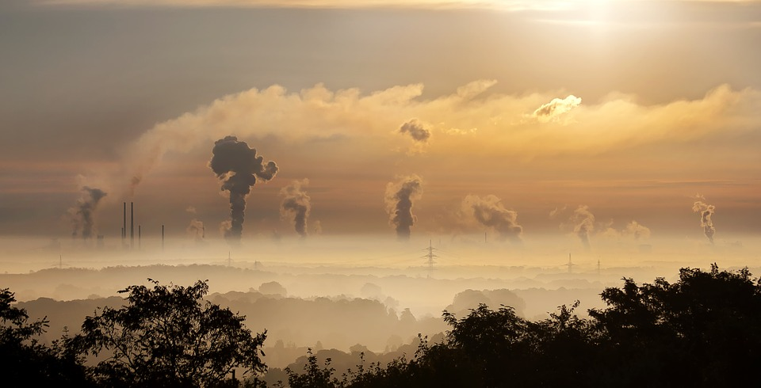

COVID-19 has been found to hurt elderly the most, apparently, it has hurt China as well. COVID-19 has not only killed thousands of Chinese people, but has also hurt Chinese reputation abroad. Call it what you want to, but China’s soft power has been hit hard.
Some have amusingly said that COVID-19 might be a Chinese conspiracy while others have raised serious concerns about China not taking proper actions to limit the virus transmission to “non-chinese” states of the world. Not many tourists would be willing to visit China anytime soon even if China declares itself 100% COVID-19 free.
Not just tourists, but MNCs with their manufacturing base in China also seem concerned.
They are looking to shift their manufacturing base from China as their supply chains have suffered major disruptions. American, South Korean and Japanese manufacturers are first to pack their bags. Japan has even announced stimulus package to help its manufacturers shift production out of China. And countries like India and Vietnam seem like a suitable new manufacturing destination.
Now this doesn’t seem like a very good news for China.

China has already been trying to make a transition away from manufacturing to service sector over the past years because of a spectrum of reasons. Less and less Chinese millennials want to do dull factory jobs. Labour costs in China has been increasing rapidly which has made it harder to keep production prices low. The trade war with the U.S. has not been good for Chinese manufacturers. Moreover, numerous factories in “China towns” have degraded air quality. China wants a future where its “citizens” breathe clean air, have high paying jobs and enjoy good standards of living. They want their “citizens” to work in finance and technology instead of low paying poisonous manufacturing jobs.
So should China be really concerned that they will have to do away with some of their manufacturing hubs because a bunch of American, Japanese, and South Korean manufactures are now looking towards India and Vietnam?